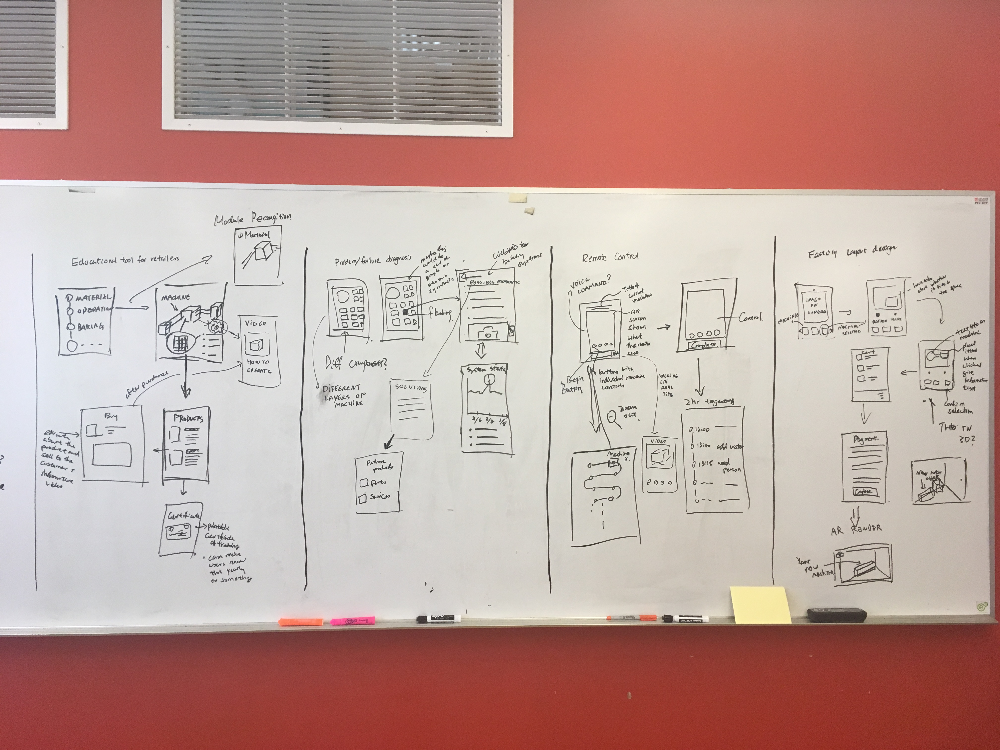
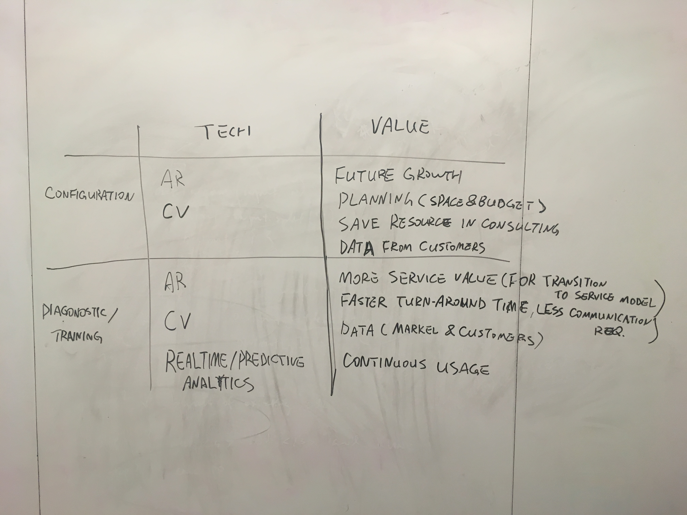

BakeWiz - Predicting Baking Machine Failures
Markel Baking Systems is a a product-based company that sells baking machinery and systems. Their clients consist of huge baking companies that could lose millions of dollars in case a single production system machine would stop working. It is therefore essential that Markel offers a sevice that antecipates machine failure, thus saving technician's long working hours and keeping customer satisfaction.
PROJECT BREAKDOWN
Scope
4 weeks
4 person team
My roles
UX Researcher
UX Designer
UI Designer
Skills
Screen Design
Wireframing
Prototyping
Tools
Paper + Pencil
Sketch
BakeWiz
After researching Markel's sale-cycle and customer base, as well as the value proposition of a mobile-app for Markel, we created BakeWiz. It uses predictive analytics to communicate machinery and system failure information to Markel's customers in an way that is accessible to non-technicians and technicians alike. Loaded with machinery use data, BakeWiz can identify the most probable failure points when a system decreases production performance. That way, a machine can be fixed before it completely stops operating and therefore causes a halt in production.
Research
General stakeholder model
We started with some background research on our client and their four branches, and then mapped out relevant stakeholders in Markel's business. Understanding the client gave us insight into domains where a service-based app would add value to Markel while helping its customers.
Ideation
Assumptions and Reversed Assumptions
The team came up with 13 assumptions that we found applicable to the client. We then reversed these assumptions in order to visualize scenarios where they wouldn't be true. By doing so we were encouraged to think about extreme solutions based on reversed assumptions.

Questions
The team then focused on a problem that resulted from a combination of assumptions: "Machines are Hard to Operate", meaning they are complex and capable of failures. That problem resulted in 20 questions on possible modifications to solve it.
Collaborative Sketches of Concepts
The team discussed four possible solutions for the chosen problem:
- Educational Tool for Retailers
- Problem Failure Diagnostics
- Remote Control
- Factory Layout Design
We then collaboratively created a low-fidelity screen map with flow and functionalities for each of them. Every team member had two minutes to collaborate on a map and then had to move on to the next one.

Value Proposition
We evaluated the values offered to the client on our two most promissing ideas. We then opted for a configuration system to increase consulting efficiency between Markel and consumer.

Screen Flow
We discussed the screen flow, keeping in mind the main functions of our app and which screen would transition to another.
Iteration
Low-Fidelity Wireframe
We adapted the screen map draft to a low fidelity wireframe that allowed us a more clear view on what the flow would look like.
Follow up Research
To validate our purchasing process assumption, we reached out to both the engineering and the sales teams of Reading Bakery Systems, a branch of Markel Food Groups. None of them mentioned any major breakdown and neither of them supported the idea that our proposed mobile service would carry that much value. For that reason, we then decided to change our solution to our second most promising idea, diagnostics.
Revamping the Workflow
Our new workflow was entirely based on the idea of directing the user to the malfunctioning machine as quickly as possible. Instead of a holistic view of the system, we highlight potential breakdowns only, thus directing to the physical location of the affected machine with fixing instructions on the next screen.
Mobile Diagnostic Service
From our research, we learned that the production system offered by Markel is large and complex, with numerous components where failures could possibly impact production. Yet, no good reporting system is available so that technicians could quickly locate these failures. Due to short time-schedule and change of direction, our first wireframes were already medium-fidelity.
Computer Vision Microinteraction
We also wanted to demonstrate how the technician could use Computer Vision to spot external machinery problems.

High-Fidelity Screens
We then created our high-fidelity screens, which allow the user an easy navigation to the most probable cause of production decrease.
Road Map
Finally, in order to show potential future appliances to be developed and the likely evolution of our app, we created a roadmap.